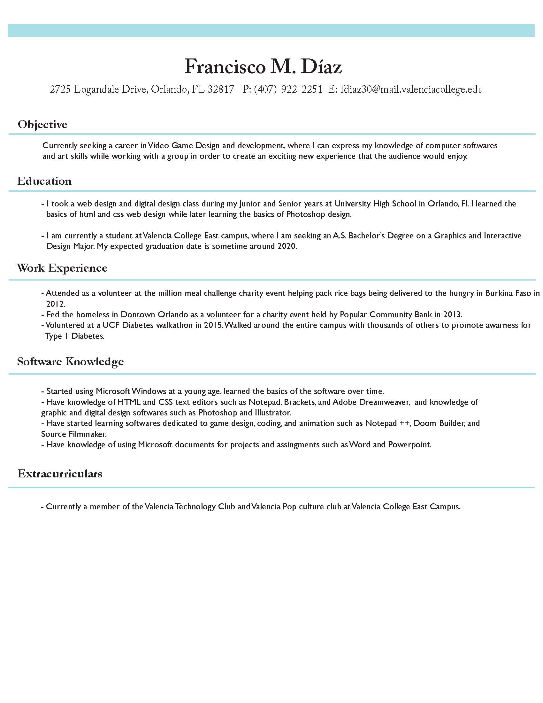

My Resume
This page is dedicated to showing of my resume that I made using Adobe Illustrator. I originally made this for an online class I had in my Spring semester, which was Professional Development for Designers. I decided that I could reuse and update this resume for when I look for a job. I could one day use this site to show it to any employers, so that they know that I at least have some experience with HTML and CSS. This page won't have anything else besides the resume. Enjoy.
